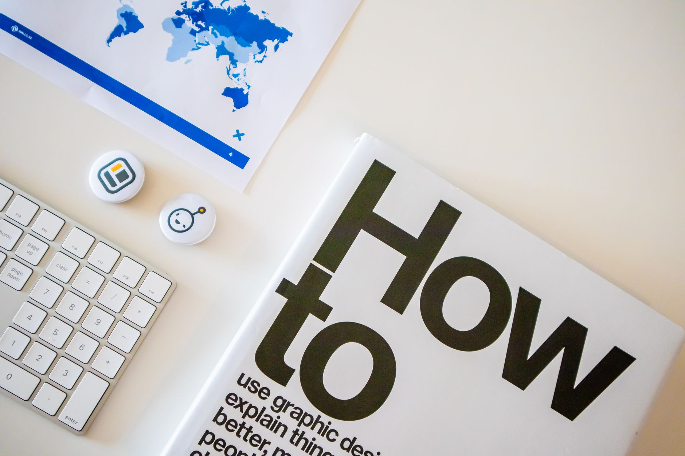

If you're a local business owner, you know that getting your message in front of your community is everything. In today's digital market, Instagram Stories has become an incredibly powerful tool for local businesses to connect directly with potential customers, showcase your products or services, and build a genuine relationship with your audience. Forget complicated marketing jargon; I'm going to show you exactly how to use this feature to drive foot traffic, increase brand awareness, and turn casual viewers into loyal customers. We're going to move beyond just posting pretty pictures and focus on creating engaging, actionable content that resonates with your local market.

We're going to dive into practical, step by step strategies. You will learn how to create compelling Story content that stops the scroll, how to use Stories to highlight behind the scenes of your business, and the specific tactics that turn story views into real website visits and inquiries. Plus, we'll explore how to use Stories effectively to promote special offers and build a sense of community around your local brand. By the end of this guide, you will have a clear roadmap to start using Instagram Stories today to grow your local business presence.

Why Instagram Stories Are Essential for Local Business Visibility
Instagram Stories are no longer just a fleeting trend; they are a powerful, direct line to your local customers. For us small business owners, understanding how to use this feature is key to cutting through the noise and connecting with the people who can actually buy from us. With over 500 million daily active users on the platform (Source: Hootsuite), the potential audience for local businesses is massive.
The real power lies in engagement. Research shows that a significant portion of people become more interested in a brand or product after seeing it in Stories (Source: Sprout Social). Also, one-third of the most-viewed Instagram Stories come from business accounts (Source: Sprout Social), meaning your local updates get seen by a huge segment of your potential customers.
By using Stories to show behind the scenes, showcase new products, or run quick polls, you build trust. When you include a link in your Story, users who interact with it are more likely to visit your website (Source: EmbedSocial). This direct path from story to your site is a fantastic, low-cost way to drive traffic and turn casual viewers into loyal local customers.
Showing Your Local Service in Action Through Stories
Showing Your Local Service in Action Through Stories
Instagram Stories are a powerful, easy way for local businesses like mine to connect directly with our community. It’s not just about posting pretty pictures; it’s about showing people exactly what we do and how we help them. Think about showing a quick behind the scenes of a service, a sneak peek at a new product, or a quick tip related to our industry. This authentic content builds trust much faster than a static post.
The reach on Stories is fantastic. With over 500 million daily active users, the potential audience is huge. Plus, the data shows that one-third of the most-viewed Instagram Stories come from business accounts (Source: Sprout Social). This means your local efforts have a real chance to get seen.
To maximize impact, make sure you use the interactive features. Stories with links allow people to take immediate action, and users who interact with Stories that include a link are highly engaged (Source: EmbedSocial). Use these features to drive traffic right to your website so potential customers can learn more about our local offerings.
Using Stickers to Start Real Conversations
Using Stickers to Start Real Conversations
Stickers are a fantastic, low-effort way to inject personality and encourage genuine interaction into your Instagram Stories. Forget just posting pretty pictures; stickers allow you to create interactive moments that pull your audience into a real conversation with your local business. Think polls asking customers what they want to see next, quizzes about your products, or simple question stickers to solicit feedback. This kind of direct engagement is powerful because it makes your brand feel approachable and human.
This interactive approach is key to leveraging the massive reach of Instagram Stories. Did you know that one-third of the most-viewed Instagram Stories come from business accounts (Source: Sprout Social)? By using stickers, you increase the likelihood that your story will be seen and, more importantly, that people will stop scrolling to engage. This direct interaction builds community and trust far better than a static announcement.
Also, these interactive elements can drive traffic. When you use stickers that include a link, you give your audience a clear next step, which can lead them to your website. Instagram users who interact with Stories that include a link are a valuable segment, and stickers are a perfect tool to guide them toward what you want them to do next.
Driving Traffic Directly to Your Booking Page
Driving Traffic Directly to Your Booking Page
As a local business owner, I see so many great services that get lost in the scroll. That is why I focus on using Instagram Stories to create direct pathways to your booking page. Instagram Stories is a powerful tool because it puts your business right in front of potential customers in a highly engaging, visual format. With over 500 million daily active users, the reach is massive, and a significant portion of those stories come from businesses, meaning you have a prime opportunity to connect.
The key is making your Stories actionable. Instead of just posting pretty pictures, use the link sticker feature to direct viewers straight to your service booking page. People are more interested in a brand after seeing it in Stories, and when you include a link, you capture users who are actively looking for solutions.
We know that users who visit a website after viewing a Story ad are a valuable audience. By consistently using Stories with clear calls to action, you turn passive viewers into active leads ready to book. This is how we use the platform to build real, local traffic for your business.
Proving Your Work Through Authentic Storytelling
As a local business owner, you need a way to show the real heart and hustle behind your brand. Instagram Stories is the perfect tool for this because it allows you to connect with your customers on a personal level, moving beyond static posts. Think of Stories as your digital storefront window, letting people see the day-to-day operations, your team, and the passion you pour into what you do.
This authentic storytelling is powerful because it builds trust faster than any polished advertisement. Did you know that one-third of the most-viewed Instagram Stories come from business accounts? That shows the platform is actively rewarding genuine content. With over 500 million daily active users, you have a massive audience waiting to see what makes your local business unique. For more on this, see How To Respond To Negative Google Reviews.
To maximize this, focus on showing behind the scenes, quick tips, or customer spotlights. When you use Stories to share something engaging, you increase the likelihood that people will visit your website or interact with your profile. Also, users who interact with Stories that include a link are highly engaged, giving you direct pathways to drive traffic to your services.
Maximizing Reach with Location Tagging Strategy
As a local business owner, you need to make sure your Instagram Stories are reaching the right people in your community. Location tagging is a simple but powerful tool to connect your content directly with potential customers nearby. Think about tagging your physical store, a specific neighborhood, or a local landmark in every Story you post. This immediately signals to Instagram and your followers that you are a relevant local option.
This strategy helps you tap into the massive audience on Instagram Stories, which has over 500 million daily active users. Also, one-third of the most-viewed Stories come from business accounts, meaning you have a prime opportunity to get noticed. By using location tags, you increase the visibility of your content to people who are geographically close to you and might be interested in what you offer.
Don't forget to use interactive stickers or link stickers in your Stories. When you include a link, users who interact with those Stories are more likely to visit your website, and users who interact with Stories that include a link are highly engaged. This combination of location tagging and clear calls to action turns passive viewing into active local engagement.
Turning Story Views into Phone Calls
As a local business owner, you need a strategy to turn those engaging Instagram Story views into real customer conversations. Instagram Stories are an incredible tool because over 500 million people are active daily, and the data shows that people are more interested in a brand or product after seeing it in Stories (Source: Sprout Social). Crucially, one-third of the most-viewed Stories come from business accounts (Source: Sprout Social), meaning your potential customers are already looking at your content.
The key is to make your Stories actionable. Don't just post pretty pictures. Use interactive stickers like polls, quizzes, and question boxes to spark engagement. This interaction builds a connection, and when you have a clear call to action, you can drive traffic directly to your business.
We see that users who interact with Stories that include a link are highly motivated (Source: EmbedSocial). Use this feature to direct people to your website or a direct messaging option. By strategically using Stories to prompt a phone call or a visit, you transform passive viewing into active leads for your local business.
Building Community Through Consistent Story Posting
Building Community Through Consistent Story Posting
As a local business owner, I see Instagram Stories as an incredible, low-pressure way to connect directly with your community. It’s not just about posting pretty pictures; it’s about showing the real side of your business, building trust, and making people feel like they are part of something special. With over 500 million daily active users, the potential reach is huge, and the data shows that people are genuinely more interested in a brand after seeing it in Stories.
Consistency is key here. Think of Stories as your daily, authentic window into your shop. Share behind the scenes of your day, introduce your team, showcase new products, or answer frequently asked questions. This regular presence helps you build familiarity, which is the first step toward turning casual viewers into loyal customers.
Also, Stories are powerful tools for driving action. You can use interactive stickers and link stickers to direct people straight to your website or a specific offer. Studies indicate that users who interact with Stories that include a link are more likely to visit your site, making it a fantastic, direct marketing channel for local businesses.
The Impact of Story Engagement Metrics
As a local business owner, understanding how your Instagram Stories perform is crucial for growth. Instagram Stories has a massive reach, with over 500 million daily active users, making it a powerful tool for local visibility. The real magic happens when you track engagement metrics because they tell you what content resonates with your community.
We see a clear trend: one-third of the most-viewed Stories come from business accounts, proving that this platform is a prime spot for local promotion. Also, the share of people who show interest in a brand or product after seeing it in Stories is significant, showing that your visual content is capturing attention.
Focusing on metrics like story reach and clicks is key. For example, accounts with over 10,000 followers see strong reach, and users who interact with Stories that include a link are highly valuable. By analyzing these numbers, we can refine our strategy to drive more traffic to your website and turn story views into real customer visits.
Final Steps to Start Getting Local Attention
Final Steps to Start Getting Local Attention
Now that you have the basics down, it is time to put your Instagram Stories into action to drive real local attention. Remember, Instagram Stories has over 500 million daily active users, and the data shows that people are significantly more interested in a brand or product after seeing it in Stories (Source: Sprout Social).
Focus on creating engaging, authentic content that showcases your local charm. Aim to make your Stories something people want to share, not just something you want to post. One-third of the most-viewed Instagram Stories come from business accounts, meaning this platform is a powerful tool for local visibility (Source: Sprout Social).
To maximize results, make sure every Story you create has a clear call to action. Encourage viewers to visit your website or check out your local offerings. Users who visit a website after viewing a Story ad, or interact with Stories that include a link, are a direct path to customer engagement (Source: EmbedSocial). Start sharing your local expertise today!
Related
- How To Respond To Negative Google Reviews
- How To Ask Customers For Google Reviews
- How To Get More Google Reviews For Your Business
Read next: How To Respond To Negative Google Reviews